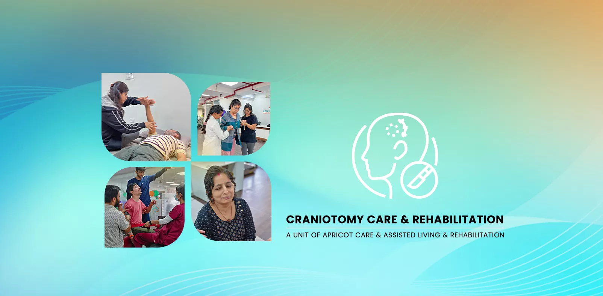

Specialized Rehabilitation & Care After Craniotomy in Pune


Your Expert Partner in Recovery and Healing After Brain Surgery
Undergoing a craniotomy—a type of brain surgery—is a significant and often life-saving medical event. The period following the procedure is a critical chapter where the real journey of healing and recovery begins. It is a time that requires not just rest, but a highly specialized, intensive, and coordinated rehabilitation program to help the brain heal and to safely reclaim your physical and cognitive abilities.
At Neuro Rehab in Pune,we are a dedicated center of excellence for post-craniotomy rehabilitation. We understand the unique complexities and challenges that follow brain surgery. Our mission is to provide a safe, medically supervised, and nurturing inpatient environment where you can focus entirely on your recovery, guided by a multidisciplinary team of neuro-rehabilitation experts.
Key Components of Your Post-Craniotomy Care
Our comprehensive, integrated program addresses every facet of your recovery after brain surgery.
- Intensive Neuro-Physiotherapy:
To rebuild physical strength, balance, and mobility.
- Cognitive Rehabilitation:
To address challenges with memory, attention, and thinking skills.
- Speech & Language Therapy:
To recover communication abilities if they have been affected.
- 24/7 Inpatient Nursing & Medical Monitoring:
To ensure your utmost safety and manage all medical needs.
- Psychological Support:
For both the patient and their family to navigate the emotional journey.
- Nutritional Therapy:
To provide the essential fuel your brain needs to heal.
- Pain & Fatigue Management:
To improve your comfort and ability to participate in therapy.
Understanding Recovery After a Craniotomy
A craniotomy is a surgical procedure where a section of the skull is temporarily removed to allow a neurosurgeon to access the brain. It is performed for a variety of critical reasons, including:
- Removing a brain tumor
- Clipping a brain aneurysm
- Draining a blood clot or hematoma (often after a TBI)
- Relieving intracranial pressure
Brain tumors, a common reason for a craniotomy, are a significant health concern, with over 28,000 cases registered in India annually. Regardless of the reason for the surgery, the brain has undergone a major event and needs active, guided support to heal.
Specialized rehabilitation is essential because of neuroplasticity. Your brain has an incredible capacity to rewire itself, and our intensive therapy programs provide the structured stimulation needed to guide this process, helping healthy areas of the brain learn to take over lost functions.
Our Post-Craniotomy Program Is Designed To:
- Safely rebuild your physical strength, balance, and coordination.
- Improve cognitive functions like memory, concentration, and problem-solving.
- Restore your ability to live as independently and safely as possible.
- Manage common post-surgical challenges like fatigue and pain.
- Provide a secure, medically supervised environment for your recovery.
Your Integrated Recovery Program at Neuro Rehab
Your recovery plan is personalized based on the reason for your surgery and the specific brain functions that have been affected.
Neuro-Physiotherapy for Physical Recovery
After brain surgery, it's common to experience weakness (hemiparesis), poor balance, and difficulty with coordinated movements.
- How we help: Our neuro-Physiotherapists design a one-on-one program of targeted exercises to re-establish the brain-to-muscle connection, improve your balance, and help you relearn how to walk and move with safety and confidence.
Cognitive Rehabilitation for Mental Clarity
This is a critical part of recovery. Your "thinking skills" are often impacted by the surgery and the underlying condition.
- How we help: Our Physiotherapists use specialized exercises and practical strategies to address challenges with short-term memory, attention span, and executive functions (the brain's ability to plan and organize). The goal is to improve your mental clarity and function.
Occupational Therapy for Daily Independence
Our occupational Physiotherapists are the crucial link between your centeral recovery and your real life.
- How we help: We help you safely relearn and adapt Activities of Daily Living (ADLs) like dressing, bathing, and preparing simple meals. We provide strategies to compensate for any new physical or cognitive challenges, with the ultimate goal of maximizing your independence.


.webp)
.webp)
-(1).webp)
.webp)
.webp)
.webp)
.webp)
.webp)
.webp)
.webp)
.webp)
.webp)
.webp)
.webp)
.webp)